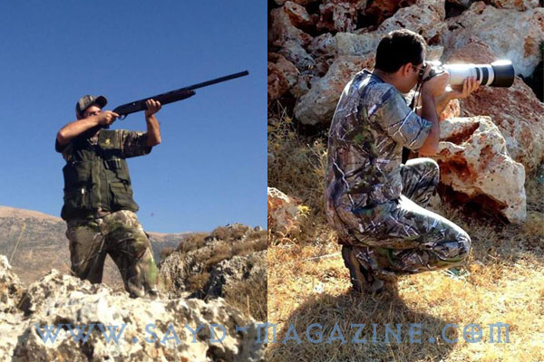
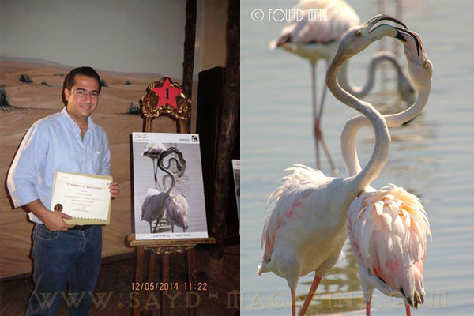
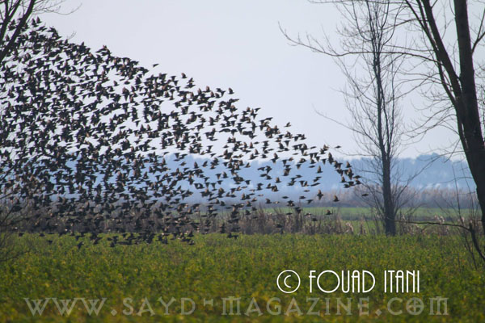
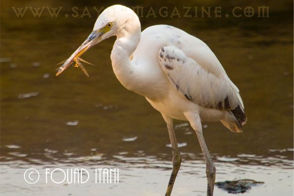
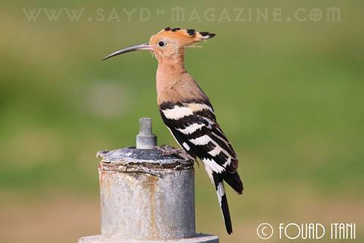
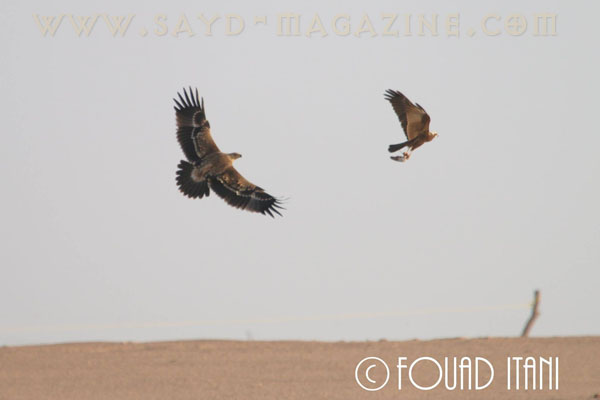
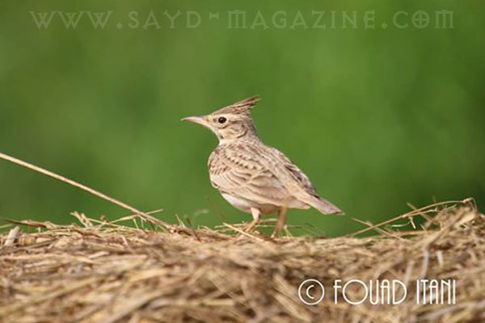

شاب من صيادين لبنان الذين لم يلوثهم دم الصيد الجائر،ولم يغره الوقوف في كادر صورة امام أعداد كبيرة مقتولة من الطيور ليقال له " يا كبير".. لأن الأخلاقيات التي تربى عليها في عائلة تحب الصيد وتحترم الطبيعة لا تسمح له أن يكون رديئا جاهلا وباحثا عن لقب لترميم رجولة ناقصة في عالم الصيد، إنما صيادا ماهرا ببندقية، وأيضا بعدسة حوّلها الى بندقية تصطاد أروع انواع الطيور دون إراقة أي قطرة دم أو تهديد بالإنقراض إنما لتدوّن لحظة حياتها وهي في الطبيعة تمارس حريتها، مقدما لأعيننا صورا أكثر من رائعة عن طيور لا يمكن رؤيتها بسهولة لأن ضجيج البشر يرعب الطبيعة وطيورها. فؤاد عيتاني الماهر في القنص اصطاد في نيسان 2014 الجائزة الأولى بين 164 صورة مشاركة في مسابقة دبي للتصوير الفوتوغرافي إحتفالا باليوم العالمي للطيور المهاجرة تحت شعار "وجهة مسارات الهجرة: الطيور المهاجرة والسياحة" والذي يهدف إلى تسليط الضوء على العلاقة بين السياحة وقضايا المحافظة على الطيور المهاجرة والحياة الفطرية. كان لـ "صيد " معه هذا الحوار.
تحوّلت من صياد الى صياد مصور اي عين تشدك أكثر عين البندقية أو الكاميرا ؟ بدأت مزاولة هواية تصوير الطيور ونشر الصور على مواقع التواصل الإجتماعي على الصفحات المعنية بالصيد والطيور والحياة البرية في لبنان، في خطوة لتوعية البعض وتعريفه على ثرواتنا الطبيعية، ووجدت إن لهذه الهواية متعة خاصة تشبه متعة الصيد وتكاد تتخطاه أحيانا كونها لا تقتصر على نوع معين اوكمية معينة او موسم معين، ولكني ايضا صياد وأحب الصيد وامارسه بطريقة حضارية وأستطيع التمييز بين الطيور والطرائد بدقة. كيف ترى واقع الصيد في لبنان اليوم كصياد مسؤول ومصور للطيور؟ للأسف ما يحصل في لبنان اليوم من صيد عشوائي وخراب بيئي، هو جريمة بحق تلك الطيور وبحق الطبيعة وبحق أولادنا. وأرى ان هناك مسؤولية كبيرة على الجميع وخصوصا الصيادين المسؤولين في الحفاظ على الطيور للحفاظ على إستدامة هواية الصيد وعلى توازن الطبيعة. ما هي أجمل صورة التقطها وكيف يمكننا أن نصف أهمية الصورة، من خلال جمالها أو صعوبة التقاطها؟ من الصعب جدا تصنيف صورة صوّرتها على انها الأجمل والأروع، فمعظم الصور عزيزة على قلبي والكثير منها يكون لها قصة معينة.. ولكن أقول لك إن من أجمل ما رأيت خلال رحلة تصوير الطيور في محميّة عمّيق في البقاع الغربي السنة الماضية، سرب كبير لطائر الزرزور يضم أكثر من الفي طائر لدرجة إنني لم أستطع أن أجمع السرب كاملا داخل إطار الكاميرا .. وما ان إقتربت من السرب حتى إنقسم الى اربعة أقسام وأخذ كل قسم يرسم لوحات فنية في الهواء. فقلت والدهشة على وجهي "تمجّد اسم الخالق".
قال في اللقاء : - الصياد الحقيقي ميزاته لا تحصى وخاصة في لبنان حيث لا يوجد قانون مطبق للصيد فيضطر الى وضع ضوابط لنفسه تميّزه عن القواص. - أهم ميزة لدى الصياد هي "الإحترام". الذي لا يحترم الطير والطبيعة والموسم ولا يحترم أصحاب الأرض حيث يمارس هوايته حتما هو ليس بصياد. - معظم الصيادين في لبنان كانوا "قواصين" ولكن بفضل الجهود الخاصة للبعض والتوعية من قبل بعض الصيادين المحترفين وبعض الجمعيات البيئية تحولوا الى صيادين مسؤولين وبفضلهم بدأنا نرى تحولا ملموسا على صعيد الهواية في ظل غياب تام للدولة. - يتعتبر الصيد بالصقور من الرياضات القديمة و المحببة بدولة الإمارات العربية المتحدة وجزأ لا يتجزأ من حضارتها و تراثها العريق. - روى لي احد اصدقائي المخضرمين والملمّين بتربية الصقور والصيد بها والمقيم في دبي " Mark Williams" كيف كان الإماراتيون في القدم يصطادون بالصقور التي يأسرونها خلال مرورها في بلادهم في بداية فصل الشتاء ويقومون بترويض الصقر البري ليصبح صيادا ماهرا ومرافقا جيدا في غرض الحصول على الطعام. ومع انتهاء موسم الصيد كان يتم إطلاق الصقور إلى البرية. - مثلي الأعلى في الصيد هو كل صياد محترم إستمتع بقطع مسافات وساعات طويلة في الحقول أو في الجرود أو في البساتين حتى لو لم "يتوفق بصيده". - من أروع ما شاهدت اثناء رحلة تصوير في الشتاء الماضي في محمية دبي الصحراوية طائر "مرزة المستنقعات" و هي تصطاد و تأكل طائر"القمري"، وكنت مأخوذا لأول مرة بتصوير هكذا مشهد وأقول بقرارة نفسي :"قديش انت محظوظ يا فؤاد لتلتقط هيك صورة ". ولم أكمل جملتي حتى تفاجأت بطائر أتى من المجهول وهو كبير للغاية حجمه يقارب ضعفي حجم المرزة، كان "العقاب الملكي الشرقي" أخد العقاب يطارد "مرزة المستنقعات" لدقائق قليلة ثم سلبها طعامها وتركها جريحة. كان المشهد ملحميا و مثيرا للغاية لم أشاهد مثيلا له سوى على قناة الناشيونال جيوغرافيك. - لباس الصيد المموه في الصيد والتصوير أيضا مهم جدا بالنسبة لي. فهو يساعدني على الإقتراب أكثر و اكثر من الهدف، خاصة إن كان الطائر محنّكا و مكّارا. - معرفتي بالطيور بدأت مع شغفي وحبي للصيد و الطبيعة، ومنذ الصغر كنت أستمتع بقراءة كتب عن الطيور المقيمة والمهاجرة. - إحتكاكي بمراقبي وخبراء الطيور الأجانب في دبي وفي لبنان أمثال الدكتور غسان رمضان جرادي زادت بشكل كبير من معرفتي وعشقي للطيور. - للأسف ..على عكس البلدان الأخرى لا تحظى هواية مراقبة الطيور في لبنان على شعبية كبيرة. فنسبة مراقبي الطيورعندنا قد لا تتعدى %1 من نسبة الصيادين و القواصة. وهنا تأتي مسؤولية الوزارات و الجمعيات المختصّة بتنمية العلاقة بين الناس والطيور المهاجرة ان كان بتعريف التلاميذ على ثرواتنا الطبيعية ولا سيما الطيور منها وتشجيعهم على المشاركة في المناسبات البيئية، أو بتكثيف الأنشطة السياحية والمسابقات المتصلة بالطيور والإستفادة من عائدات السياحة البيئية في حفظ المحميات والحمى الطبيعية والحياة الفطرية في لبنان. - ثرواتنا الطبيعية ليست ملكا لنا فحسب إنما هي أمانة في أعناقنا علينا الحفاظ عليها لأولادنا وللأجيال القادمة كي يستمتعوا بها ويحافظوا عليها.



